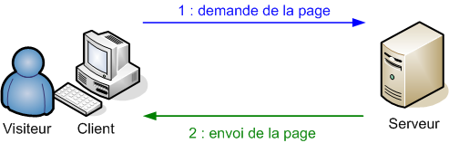

Vous ne vous êtes jamais demandés pourquoi vous écrivez "http://" avant l'adresse de la plupart des sites internet ? Vous ne vous êtes jamais demandés ce qui se passait vraiment derrière les flèches des schémas de M@teo21 ?
Quelles que soient les réponses, je vais tenter de vous expliquer ça à partir de zér0.
Si je vais sur Wikipédia, je trouve cette superbe définition :
Citation : Wikipédia
Le Hypertext Transfer Protocol, plus connu sous l'abréviation HTTP, littéralement le « protocole de transfert hypertexte », est un protocole de communication client-serveur développé pour le World Wide Web. Il est utilisé pour échanger toute sorte de données entre client HTTP et serveur HTTP.
C'est-à-dire que HTTP est un espèce de langage qui va permettre au client (vous, par le biais de votre navigateur par exemple) de communiquer avec un serveur connecté au réseau (le serveur HTTP installé sur le serveur d'un site, par exemple Apache).
Dans le schéma suivant, les flèches représentent les requêtes HTTP :

Les requêtes (les flèches du schéma) vont toujours par paires : la demande (du client) et la réponse (du serveur). Si ce n'est pas le cas, c'est qu'un problème est survenu à un endroit du réseau.
La syntaxe de la demande (= requête client) est toujours la même :
Ligne de commande (Commande, URL, Version de protocole)
En-tête de requête
<nouvelle ligne>
Corps de requête
Ligne de commande
Commande est la méthode à utiliser, il spécifie le type de requête, il peut avoir les valeurs :
Citation : Wikipédia
GET C'est la méthode la plus courante pour demander une ressource. Une requête GET est sans effet sur la ressource, il doit être possible de répéter la requête sans effet. HEAD Cette méthode ne demande que des informations sur la ressource, sans demander la ressource elle-même. POST Cette méthode doit être utilisée lorsqu'une requête modifie la ressource. OPTIONS Cette méthode permet d'obtenir les options de communication d'une ressource ou du serveur en général. CONNECT Cette méthode permet d'utiliser un proxy comme un tunnel de communication. TRACE Cette méthode demande au serveur de retourner ce qu'il a reçu, dans le but de tester et d'effectuer un diagnostic sur la connexion. PUT Cette méthode permet d'ajouter une ressource sur le serveur. DELETE Cette méthode permet de supprimer une ressource du serveur.
Je n'aborderai ici que les plus courantes : HEAD, GET et POST.
Ensuite, vient URL, c'est-à-dire l'adresse de la page sur le serveur ; elle est du type : "/repertoire/page.ext". Traduction : le fichier "page.ext" dans le dossier "repertoire" qui se situe à la racine du serveur.
Le dernier élément de Ligne de commande est la version de HTTP utilisée. La version que je décris dans ce tuto est HTTP 1.1, je dois donc écrire : "HTTP/1.1".
Exemple :
GET /repertoire/page.html HTTP/1.1
En-têtes
Maintenant, attaquons-nous à l'en-tête : celui-ci peut contenir tout un tas de valeurs (c'est un peu le même principe que les balises <meta> en HTML), toujours présentées sous la forme :
Nom: valeur
En voici quelques-unes :
Host: www.site.com Spécifie le nom de domaine du site, par exemple s'il y a plusieurs sites à la même adresse IP.
Cookie: nom-cookie=valeur cookie Permet d'envoyer au serveur les cookies qui ont été enregistrés. Un cookie à toujours un nom et une valeur. Pour en envoyer plusieurs, écrivez-les à la suite, séparés par un point-virgule.
Connection: Close|Keep-Alive Définit le type de connexion :
Close : la connexion est fermée après la réponse
Keep-Alive : crée une connexion persistante. Avec ce type de connexion, il est même possible d'envoyer une requête sans attendre la réponse à la précédente.
Content-type: application/x-www-form-urlencoded Spécifie le type MIME du corps de requête, il sera très utile dans le cas d'une requête POST.
Content-Length: 42 Spécifie la longueur du corps de requête.
Corps
Pour terminer la requête, on envoie le corps de requête. Il peut contenir, par exemple, le contenu d'un formulaire HTML envoyé en POST. Dans le cas du formulaire, les variables ont un nom et une valeur, comme l'en-tête Cookie, et les différentes variables sont séparées par des esperluettes : "&" (notez que les variables passées par GET sont également séparées par "&").
Exemple :
variable=valeur&variable2=valeur2
HEAD
HEAD demande l'envoi de l'en-tête de la réponse sans son contenu. Il est intéressant si on veut, par exemple, récupérer des informations sur un fichier ou sur le serveur.
Exemple :
HEAD /fichier.ext HTTP/1.1
Host: www.site.com
Connection: Close
<nouvelle ligne>
NB : même si le corps de requête ne contient rien, on termine l'en-tête sur 2 nouvelles lignes.
GET
GET est la méthode permettant de récupérer le contenu d'un fichier.
Exemple :
GET /fichier.ext HTTP/1.1
Host: www.site.com
Connection: Close
<nouvelle ligne>
Pour ceux qui pratiquent le PHP notamment, GET est familier. En effet, pour pouvoir récupérer des variables passées par l'url, il faut faire : $_GET['variable']. Pour transmettre ces variables, il faut remplacer la ligne de commande par quelque chose du type :
GET /fichier.ext?variable=valeur&variable2=valeur2 HTTP/1.1
En séparant la liste de variables de l'adresse de la page par un "?" et en séparant chaque variable de la suivante par "&".
POST
Ce dernier est un chouïa plus complexe. Il a le même effet que GET sauf que, lui, envoie des données via le corps de la requête. Il vous faudra spécifier le type des données. Pour un formulaire HTML, il y a 2 valeurs possibles :
application/x-www-form-urlencoded valeur par défaut
multipart/form-data utilisée notamment pour le download de fichiers.
Il vous faudra également spécifier la longueur du corps.
Exemple :
POST /fichier.ext HTTP/1.1
Host: www.site.com
Connection: Close
Content-type: application/x-www-form-urlencoded
Content-Length: 33
<nouvelle ligne>
variable=valeur&variable2=valeur2
Remarque : on peut transmettre des variables GET avec une requête POST, il suffit de changer l'url demandée de la même façon que pour GET.
C'est bien beau tout ça, mais où dois-je taper mes requêtes HTTP ? Je dois les compiler ? Je dois les enregistrer dans un fichier ? o_O
HTTP n'est pas un langage en soit, c'est un protocole de communication, une syntaxe pour formuler des demandes et des réponses. On l'utilise via un vrai langage de programmation, le PHP ou le C, par exemple. Le langage se chargera de se connecter au serveur, d'envoyer / recevoir les requêtes et de fermer la connexion.
Pour faire des requêtes HTTP et recevoir les réponses du serveur, il faut utiliser ce qu'on appelle les sockets (ici, je le fais en PHP : doc, tuto d'un zér0).
Pour que vous puissiez tester les requêtes et voir les réponses, voici une portion de code en PHP où vous devrez modifier $name suivant le nom du site (ex : www.siteduzero.com) et $envoi qui contient la requête :
<?php
//pour que la réponse s'affiche comme du texte brut
header('Content-Type: text/plain');
/*partie à modifier*/
$name = 'www.site.com';//nom du site
//pour ne pas devoir calculer à la main la longueur du corps, on le stocke dans une variable et la fonction strlen() nous la donne.
$data = 'variable=valeur&variable2=valeur2';
//la requête
$envoi = "POST / HTTP/1.1\r\n";
$envoi .= "Host: ".$name."\r\n";
$envoi .= "Connection: Close\r\n";
$envoi .= "Content-type: application/x-www-form-urlencoded\r\n";
$envoi .= "Content-Length: ".strlen($data)."\r\n\r\n";
$envoi .= $data."\r\n";
/*/partie à modifier*/
/*ouverture socket*/
$socket = socket_create(AF_INET, SOCK_STREAM, SOL_TCP);
if($socket < 0){
die('FATAL ERROR: socket_create() : " '.socket_strerror($socket).' "');
}
if (socket_connect($socket,gethostbyname($name),80) < 0){
die('FATAL ERROR: socket_connect()');
}
/*/ouverture socket*/
/*envoi demande*/
if(($int = socket_write($socket, $envoi, strlen($envoi))) === false){
die('FATAL ERROR: socket_write() failed, '.$int.' characters written');
}
/*/envoi demande*/
/*lecture réponse*/
$reception = '';
while($buff = socket_read($socket, 2000)){
$reception.=$buff;
}
echo $reception;
/*/lecture réponse*/
socket_close($socket);
?>
NB : les retours à la ligne sont remplacés par " ", ils sont importants dans les requêtes HTTP car ils délimitent chaque information. Entre l'en-tête et le corps, il faut une ligne vide, il y a donc " " après le dernier en-tête, ici : Content-Length. NB2 : pour fonctionner, ce script nécessite l'activation de la librairie : php_sockets.dll, la manoeuvre est expliquée ici.
Voilà, on est au bout ; j'espère que ce tuto vous a plu et surtout, que vous avez compris certaines choses. Normalement, maintenant, vous êtes parés pour faire un navigateur :p , en C par exemple, à l'aide des sockets.
{kind=link}